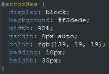

Saya mengerjakan bagian javascript dan stylecss dari project UAS ini.
di file index ada sintaks javascript untuk fungsi centang (checked) pada to_do_list yang terhubung di file app.php
Bedanya javascript ini hanya menghapus centang di tampilan web saja
Lalu ada sintaks javascript untuk menghapus todolist yang juga terhubung dengan file add.php
Ada 1 file js untuk meletakkan jquerry sebagai library JavaScript yang akan mengatur interaksi antara JavaScript dengan HTML yang berjalan di sisi klien.
Di CSS sendiri untuk memberi tampilan menarik, dan ada fungsi untuk menampilkan warna merah di form ketika kita pencet add tanpa mengisi data,

untuk memberikan style text akan tergaris(line-through) ketika todolist nya dicentang.